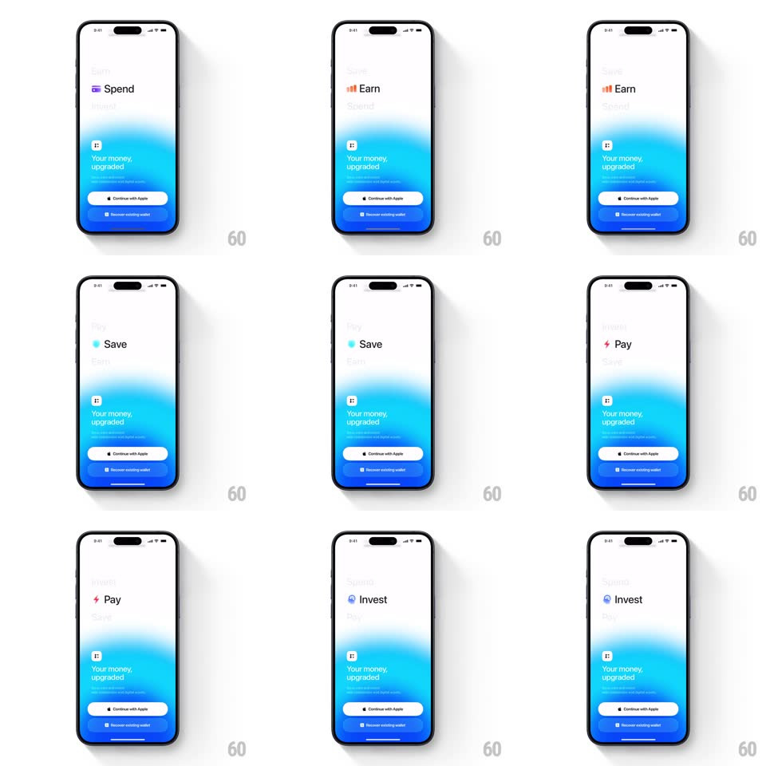

Media
Frame-by-frame

Rebuild this animation 1:1: Fuse's onboarding value-prop ticker - above a blue gradient glow and the "Your money, upgraded." tagline, words cycle vertically (Spend, Earn, Save, Pay, Invest), each with its own icon and color, on a springy slide.

Rebuild this animation 1:1: Fuse's onboarding value-prop ticker - above a blue gradient glow and the "Your money, upgraded." tagline, words cycle vertically (Spend, Earn, Save, Pay, Invest), each with its own icon and color, on a springy slide. ## Integration Integration: stack-agnostic spec - springs given as stiffness/damping, timed motions as duration + curve; map every value to your framework and animation library of choice. ## Scene An onboarding screen: white background with a soft blue gradient glow rising from the bottom, the tagline "Your money, upgraded." and a Continue with Apple button pinned low; centered above, a two-line ticker of large value-prop words, each paired with a small colored icon. ## Motion spec Pattern: auto-playing vertical word cycle, one word every ~1.4s. - Advance: the current word slides up and out (translateY -100%, 350ms, ease-in) while the next word slides up from below into its slot (spring ~280/20, 400ms) with a slight scale settle (0.95 -> 1). - Color shift: each word's icon and text tint swap with the word (Spend purple, Earn orange, Save teal, Pay pink/red, Invest violet-blue); the transition crossfades color over 200ms mid-slide. - Hold: each word rests fully visible for ~1s before advancing. - The background, tagline, and buttons stay static throughout - only the ticker moves. ## Calibration - Only one word is fully legible at a time; the outgoing word fades as it exits. - Cycle loops indefinitely without resetting the layout. ## Reduced motion Crossfade between words (200ms), no vertical travel. ## Don't miss - The outgoing word exits upward, the incoming enters from below - never the reverse. - Icon and word swap together; no orphaned icon frame.